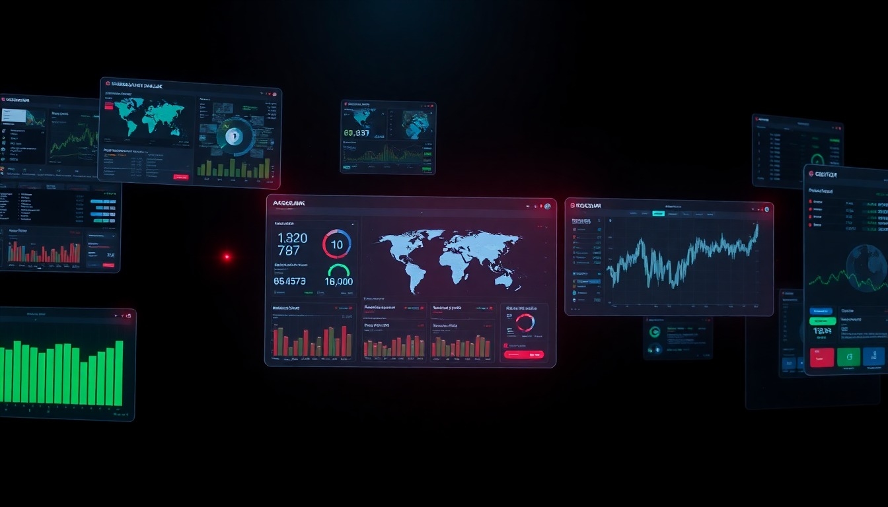
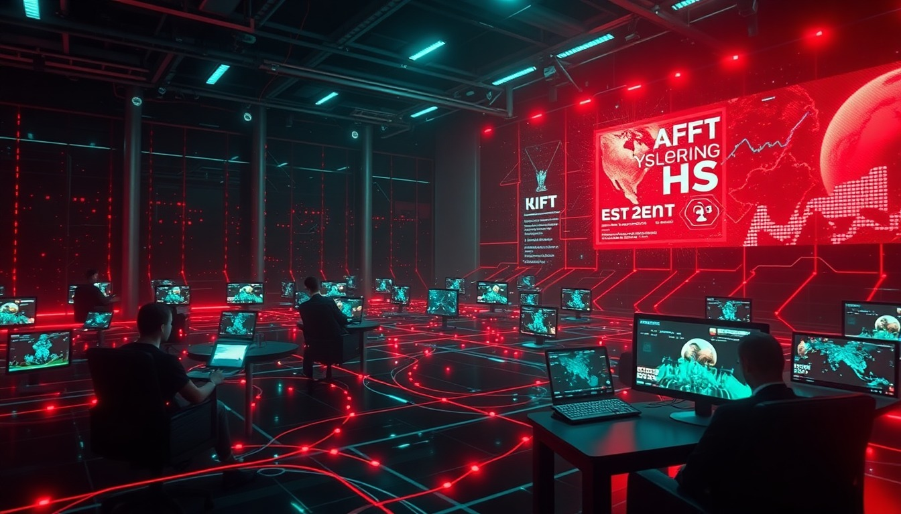

Katechon x Dune
Live software becomes the next media object.
Channels people can watch, scroll, and eventually act inside.
Not SaaS
A dashboard with the grammar of interactive media.
State, not pixels
YouTube streams video. Katechon streams software state.
inspectable
personalized
recomposable
actionable

Why Dune
A weird interactive primitive before the network is obvious.
Seed round: lead or anchor the feed layer for live application channels.